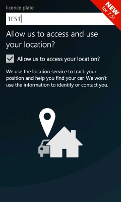
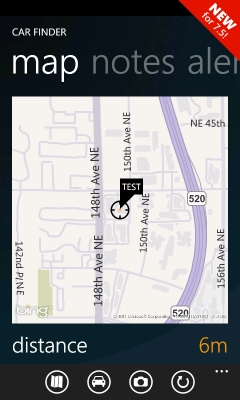
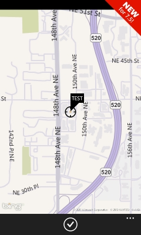
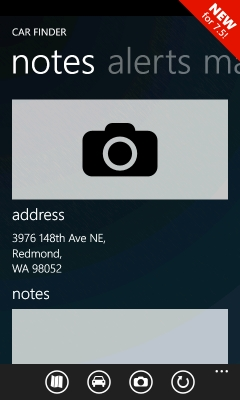
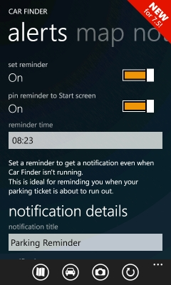
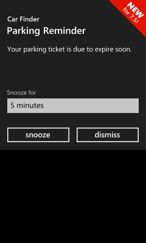
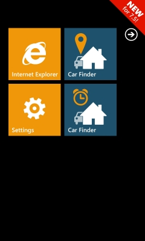
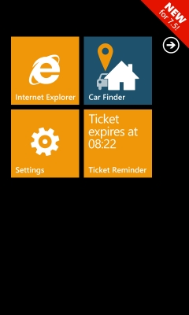

Festive Tones
Car Finder:
Never lose your
car again!
- 
- 
- 
- 
- 
- 
- 
- 
Features
- Map of your current location showing where you left your car
- Take a photo and notes to show and describe where you left your car
- Address resolution to help you get back
- Display of your distance from your car
- Imperial or metric distance measurements
- Car marker includes the licence plate (handy if you have a hire car)
- Translated into French, German, Italian, Spanish, and Dutch
Reviews
Clean slick design, works as expected :)
@lookitskrisThis is very good indeed,George s
georgesaaUseful app
Black Mafia85